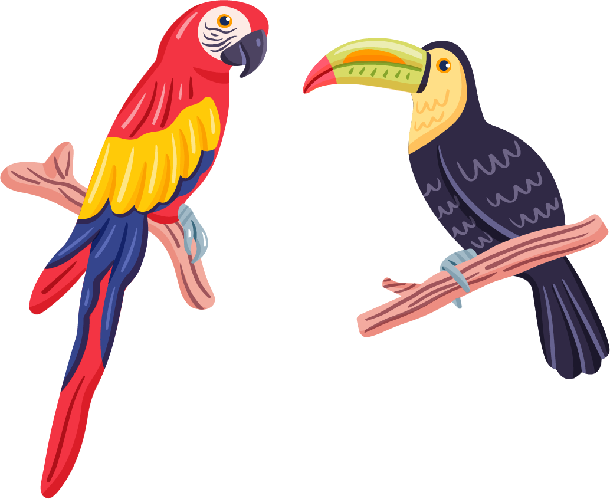

2024-08-28

책 제목: 여기, 내 작은 선물
- 작자: 따뜻한 하루 엮음.모두가 나에게 등을 돌려도, 가족만은 당신 편입니다.
그렇게 가까운 가족에게 살가운 말 한마디 해주는 게 가장 쑥스럽죠?
당신의 부모도 형제도 모두 마찬가지일 것입니다.
가족이 먼저 다가오길 기다리지 말고 내가 먼저 표현해 보세요.
표현하지 않아도 그 마음 충분히 알겠지만,
표현해 준다면 입가에 행복한 미소가 떠나지 않을 것입니다.
어머니께서 지병으로 누어 계신 지 몇 해가 되었습니다.
그런 어머니가 어느날, 헝클어진 머리카락을 곱게 빗어 쪽 진 뒤
우리 남매를 불러 앉혔습니다.
마치 돌아오지 못할 여행이라도 떠나는 사람처럼 얼굴에 슬품이 가득했습니다.
그리고 어머니께서 말씀하셨습니다.
"정수야, 누나를 부탁한다.
네가 누나의 목소리가 돼줘야 해, 그럴 수 있지?"
"엄마, 왜 그런 말씀을 하세요. 그러지 마세요."
어미니는 말 못하는 누나가 마음에 걸려
차마 눈을 감을 수 없다며 제 손을 꼭 잡고 당부하셨습니다.
며칠 뒤 어머니는 그렇게 우리 남매의 손을 하나로 맞잡고는
돌아오지 않을 먼 곳으로 영영 떠나셨습니다.
그로부터 10년이 지나게 되었으며, 저는 먼 친척의 도움으로
야간 고등학교를 마칠 수 있었습니다.
그 후, 서울에 직장을 얻은 저는 누나와 함께 서울로 상경했습니다.
그러던 어느 날 퇴근 후 집에 돌아오고 있는데 동네 한쪽 잘 보이지 않는 곳에
누나와 아이들이 모여 있었습니다.
무심히 돌아봤는데 누나가 앵무새 한 마리를 놓고
동네 아이들과 무엇인가를 하는 것이었습니다.
신경 쓰고 싶지 않아 집으로 들어가련던
제 귓전에 알아들을 수 없는 앵무새 소리가 들렸습니다.
'주주... 주... 주우...'
앵무새도 아이들도 알아들을 수 없는 소리를 내고 있었지만,
신경 쓰고 싶지 않았습니다.
그 후로도 동네 아이들과 누나 그리고 앵무새는
동네 한쪽에 모여 알 수 없는 소리를 내는 일을 반복했습니다.
"웅얼웅얼""주우...주주... 주우..."
모처럼 쉬는 날, 마치 천식 환자처럼 그렁대는 앵무새는
내 늦잠을 방해하고 신경을 건드렸습니다.
"제발 저 앵무새 치워버릴 수 없어?"
누나에게 얼엄장처럼 차가운 표정으로 쏘아붙였습니다.
누나는 그런 제 태도에 나감한 표정이었지만,
애써 못 들은 척하는 것 같았습니다.
그렇게 또 며칠이 지난 어느날,
누군가의 반복되는 말에 잠을 깨버린 전,
소스라치게 놀라고 말았습니다.
"생일... 추커... 생일...추카!"
앰무새는 분명 그렇게 말하고 있었습니다.
그리고 누나가 건내준 카드에는
단정한 글씨로 이렇게 쓰여 있었습니다.
"생일 축하한다. 내 목소리로 이 말을 꼭 해주고 싶었는데..."
"생일...추커... 생일...추카!"
목소리가 없는 누나가 저에게 난생 처음 들려준 말이었습니다.
앵무새에게 그 한마디를 훈련 시키기 위해
누나는 그렇게 여러 날을 동네 아이들에게 부탁하여
연습을 하고 있었던 것이었습니다.
전, 쏟아지는 눈물을 애써 감추려 고개 숙여 미역국만 먹고 있었습니다.